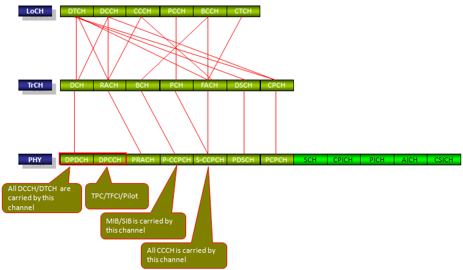
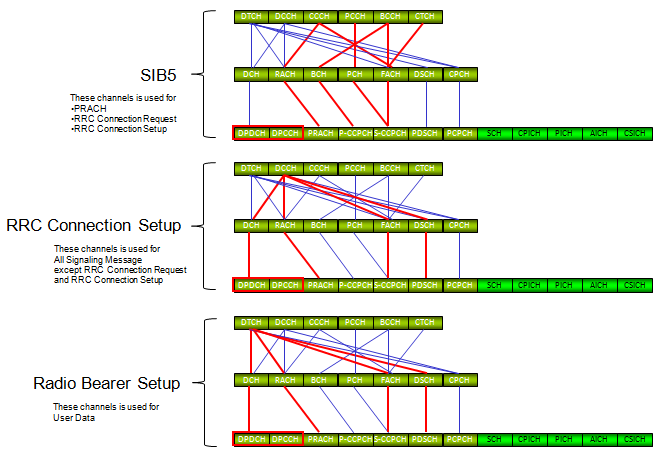

| RAB Overview |
|
If you are in this area (Wireless communication) for at least about a year, you would be familiar with the ping-pongs of the messages between the two parties in the communication(e.g, messages between a mobile phone and Network). You can even do some troubleshootings based on the ping-pong rule. For example, if you see 'RRC Connection Setup' being sent from Network log and you haven't seen 'RRC Connection Complete' in the network log, you would say "This may be UE issue because it doesn't seem to send proper reply'. Then you would go to UE log and found 'RRC Connection Complete' message were sent from RRC layer. Then there going to be long argument between the two party, just memorizing the message sequence would not help much. To handle this kind of situation, you should know exactly what is supposed to happen when a Network or UE received a message and what is supposed to happened before they send any specific message. One of the key things to do after receiving a message or before sending a message is to establish a specific channel (signal path or data path). These data path or signaling path is called 'Radio Bearer' and the process of setting up thse data path is called 'Radio Bearer Setup'. This is one of the most critical part and tricky part to understand in any kind of communication mainly because you have to know the very details from physical layer to higher layer. From your experience you would realize that understanding a little bit of everything would be relatively easy, obtaining in-depth knowledge in a specific/narrow area would be a little tough, but not impossible to achieve. However, mastering the whole area to a very detailed level and getting a clear picture both on high level and in detail would be very, very difficult. This is why it is difficult to have complete understanding of Radio Bearer Setup. This page and several other pages are for trying to help you have better picture on this process.
Overall Channel Mapping
The critical part of Radio Bearer Setup procedure is to establish the signaling/data path as shown below. You don't have to set up all the possible path at once,but you have to make it sure that the data path for a specific message/data has already established before they are getting transmitted. For example, you have to make it sure that CCCH - RACH - PRACH channel has been established before receiving RRC Connection Request and CCCH - FACH - SCCPCH before sending RRC Connection Setup. Try marking the path for each signaling message and user data. Get your self familiar so that your finger draw the path on its own as soon as hear the name of the signaling message.

Major steps and RRC messages Mapping the channels
Following is the overall steps of Radio Bearer Establishment during the registration and call setup. i) Establish BCCH - BCH - PCCPCH ii) MIB/SIB Transmission/Reception iii) Establish CCCH-RACH-PRACH (Configured in SIB5) iv) Establish CCCH-FACH-S-SCCPCH (Configured in SIB5) v) RRC Connection Request vi) RRC Connection Setup vii) Establish DCCH-DCH-DPDCH/DPCCH (Configured in RRC Connection Setup) viii) Go through to the end of registration ix) < Idle > x) Make a call xi) Establish CCCH-RACH-PRACH (Configured in SIB5) xii) Establish CCCH-FACH-S-SCCPCH (Configured in SIB5) xiii) RRC Connection Request xiv) RRC Connection Setup xv) Establish DCCH-DCH-DPDCH/DPCCH (Configured in RRC Connection Setup) xvi) Go through signaling for call connection xvii) Radio Bearer Setup xviii) Establish DTCH-DCH-DPDCH/DPCCH (Configured in Radio Bearer Setup) xix) Data Transmission/Reception
Follwing diagram would help you visualize which channel path is establish by which RRC messages.

|